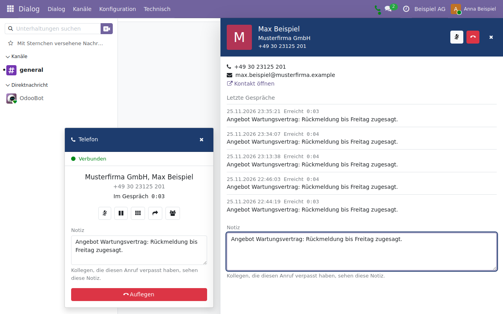
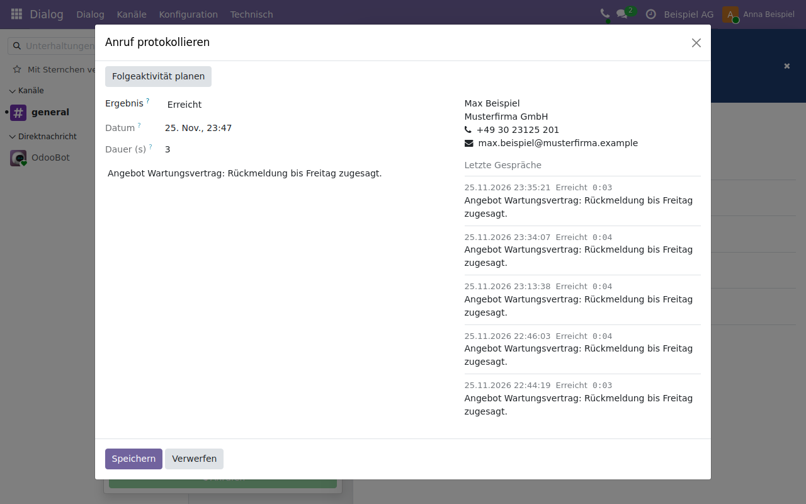
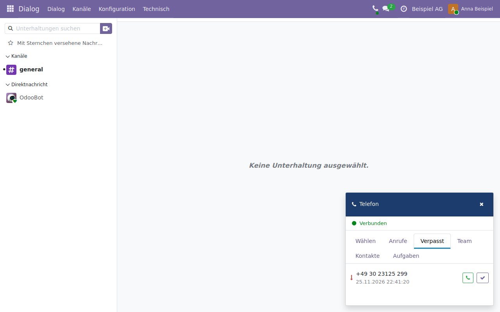
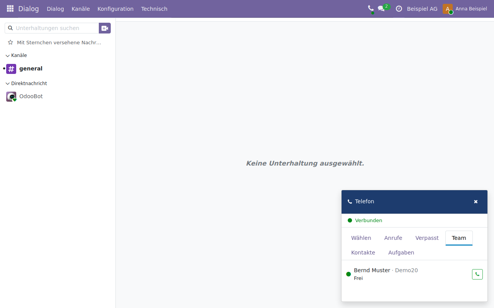
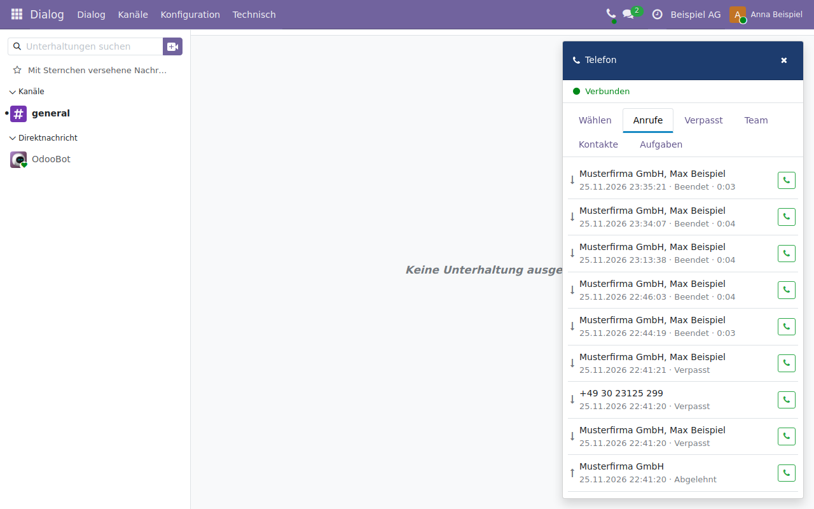
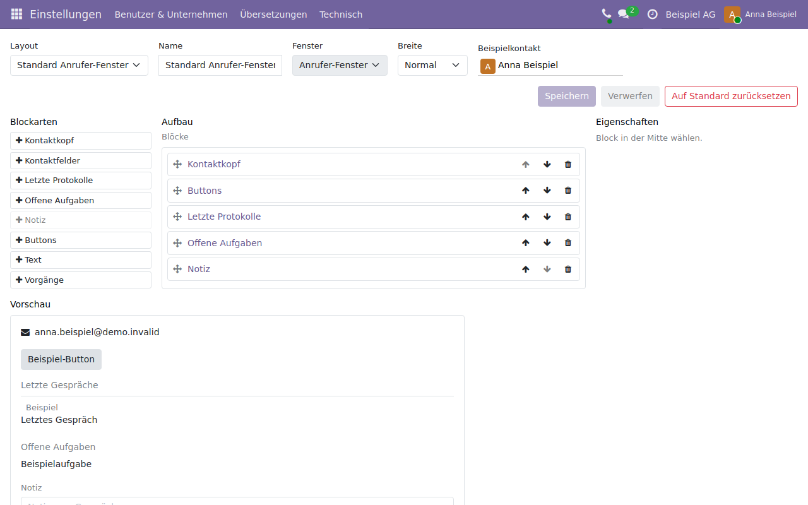

<style>
.wbv{font-family:-apple-system,"Segoe UI",Roboto,Helvetica,Arial,sans-serif;color:#1f2937;line-height:1.6;font-size:16px}
.wbv h1{font-size:2.1rem;margin:0 0 .3em;color:#1c3a6b}
.wbv h2{font-size:1.5rem;margin:1.6em 0 .5em;color:#1c3a6b;border-bottom:2px solid #e5e7eb;padding-bottom:.25em}
.wbv h3{font-size:1.15rem;margin:1.2em 0 .3em}
.wbv .lead{font-size:1.15rem;color:#374151}
.wbv ul{padding-left:1.3em}
.wbv li{margin:.25em 0}
.wbv figure{margin:1.2em 0}
.wbv figure img{max-width:100%;height:auto;border:1px solid #d1d5db;border-radius:6px;box-shadow:0 2px 8px rgba(0,0,0,.08)}
.wbv figcaption{font-size:.9rem;color:#6b7280;margin-top:.4em}
.wbv .hinweis{background:#fff7ed;border-left:4px solid #f59e0b;padding:.7em 1em;margin:1em 0}
.wbv .en{background:#f3f4f6;padding:1em 1.3em;border-radius:6px;margin-top:2em}
.wbv table{border-collapse:collapse;margin:.8em 0}
.wbv td,.wbv th{border:1px solid #d1d5db;padding:.35em .7em;text-align:left}
.wbv a{color:#1c3a6b}
</style>

<section class="wbv"><div class="oe_container"><div class="oe_row">
<h1>WB VoIP</h1>
<p class="lead">Softphone, Anrufprotokoll und Telefonanlagen-Anbindung direkt in Odoo 19</p>
<figure><figcaption>WB VoIP in Odoo 19</figcaption></figure>
<h2>Ihr Nutzen</h2>
<ul><li>Telefonieren im Browser, ohne zusätzliche Telefon-Software: Wählen, Annehmen, Auflegen, Stumm, Halten.</li><li>Jeder Anruf landet automatisch im Anrufprotokoll am Kontakt, mit Ergebnis, Notiz und Folgeaktivität.</li><li>Eingehende Anrufe zeigen sofort, wer anruft: Kontakt, letzte Gespräche und offene Aufgaben.</li><li>Verpasste Anrufe gehen nicht verloren: Rückruf-Liste mit Zähler, Rückruf-Aktivität und Kollegen-Hinweis.</li></ul>
<h2>Funktionen</h2>
<ul><li><strong>Softphone</strong> im Odoo-Backend (WebRTC über SIP.js): Wähltastatur, Anrufe, Kontakte, Aufgaben, Team.</li><li><strong>Zweite Leitung, Übergeben, Konferenz</strong> aus dem Softphone und der Team-Übersicht.</li><li><strong>Anrufer-Fenster</strong> bei ein- und ausgehenden Anrufen: Kontaktkopf, Kontaktfelder, letzte Gespräche, offene Aufgaben, Notiz zum Gespräch, Anruf-Buttons.</li><li><strong>Protokoll-Popup</strong> nach dem Auflegen: Ergebnis, Notiz, letzte Gespräche, Folgeaktivität planen.</li><li><strong>Layout-Designer</strong>: Aufbau von Anrufer-Fenster und Popup grafisch bestimmen, je Benutzergruppe, mit Vorschau.</li><li><strong>Anruf-Buttons</strong> frei konfigurierbar (Fenster öffnen, Serveraktion, Webadresse, neuer Kontakt) mit Button-Assistent.</li><li><strong>Verpasste Anrufe</strong> mit Rückruf-Aktivität, Zähler am Telefonsymbol und Kollegen-Hinweis bei anderswo angenommenen Anrufen.</li><li><strong>Rufnummer zuordnen</strong> bei unbekannter Nummer, Erkennung im E.164-Format.</li><li><strong>Team-Übersicht</strong> mit Anwesenheit und Telefonstatus (je Firma schaltbar).</li><li><strong>Rechte</strong>: Benutzer sehen nur eigene Anrufe und Protokolle, Administratoren alle. SIP-Passwort nur verschlüsselt, nie lesbar.</li><li><strong>Testmodus</strong>: Anlage im Modus „test“ simuliert die Gegenstelle für Schulung und Abnahme.</li></ul>
<h2>Screenshots</h2>
<figure><figcaption>Softphone: Wähltastatur im Odoo-Backend</figcaption></figure>
<figure><figcaption>Anrufer-Fenster mit Kontakt, letzten Gesprächen und Notiz</figcaption></figure>
<figure><figcaption>Protokoll-Popup nach dem Auflegen</figcaption></figure>
<figure><figcaption>Reiter „Verpasst“ mit Rückruf und Erledigt-Haken</figcaption></figure>
<figure><figcaption>Team-Übersicht mit Telefonstatus</figcaption></figure>
<figure><figcaption>Anrufliste im Softphone</figcaption></figure>
<figure><figcaption>Layout-Designer mit Vorschau an einem Beispielkontakt</figcaption></figure>
<h2>Voraussetzungen</h2>
<ul><li>Odoo 19, Community oder Enterprise (Module <code>mail</code>, <code>phone_validation</code>, <code>bus</code>, <code>web</code>).</li><li>Eine <strong>WebRTC-fähige SIP-Telefonanlage</strong> mit WebSocket-Zugang über <code>wss://</code> (verschlüsselt) und je Mitarbeiter eine Nebenstelle.</li><li>Ein aktueller Browser mit Mikrofonzugriff (HTTPS erforderlich).</li><li>Der Schlüssel <code>WB_VOIP_FERNET_KEY</code> auf dem Server für die verschlüsselte Ablage der SIP-Passwörter.</li><li>Lizenzmodul <code>wb_license_client</code> und ein gültiger Lizenzschlüssel (Produkt VOIP).</li><li>Nicht gleichzeitig mit dem Odoo-Enterprise-Modul <code>voip</code> installierbar.</li><li>Oberfläche: Deutsch (Englisch in Vorbereitung).</li></ul>
<h2>Datenschutz-Hinweise</h2>
<div class="hinweis"><p><strong>Vor dem Produktiveinsatz bitte lesen.</strong> Dieser Abschnitt ersetzt keine Rechtsberatung; der Betreiber ist für die datenschutzgerechte Nutzung verantwortlich.</p></div>
<ul><li><strong>Team-Übersicht:</strong> Sie zeigt Anwesenheit und Telefonstatus von Beschäftigten und ist standardmäßig eingeschaltet. Der Betreiber schaltet sie aus, bis die Beschäftigten informiert sind (Art. 13 DSGVO), und prüft, ob eine Datenschutz-Folgenabschätzung (Art. 35 DSGVO) nötig ist. Ist ein <strong>Betriebsrat</strong> vorhanden, darf die Übersicht erst nach dessen Zustimmung (in der Regel Betriebsvereinbarung, § 87 Abs. 1 Nr. 6 BetrVG) genutzt werden. Die Gesprächsdauer im Team ist getrennt schaltbar und standardmäßig aus.</li><li><strong>Aufbewahrung:</strong> Beendete Anrufe werden nach einer einstellbaren Löschfrist automatisch entfernt (Standard 12 Monate, 0 = nie); die Protokolle bleiben erhalten. Die Frist ist vom Betreiber an den eigenen Zweck anzupassen.</li><li><strong>Zugriff:</strong> Jeder Benutzer sieht nur eigene Anrufe und Protokolle. Zugangsdaten und Schlüssel erscheinen nie in Logs, Bus oder Browser-Speicher.</li><li><strong>Webadresse-Buttons:</strong> Rufnummer und Kontakt-ID gehen an den Betreiber der Adresse. Bei externen Diensten ist in der Regel ein Vertrag zur Auftragsverarbeitung (Art. 28 DSGVO) nötig.</li><li><strong>Keine Daten an Dritte durch das Modul:</strong> Ohne eingetragene ICE-Server fragt der Browser keinen fremden STUN-Server.</li></ul>

<h2>Lizenz und Kontakt</h2>
<p>Lizenz: <strong>OPL-1</strong> (Odoo Proprietary License v1.0). Die Nutzung setzt einen <strong>Lizenzschlüssel von
WISSEN BERATUNG</strong> voraus; der Schlüssel wird über das Modul <code>wb_license_client</code> hinterlegt.
Ohne gültige Lizenz sind Anrufen und Anmelden gesperrt, vorhandene Protokolle bleiben les- und bearbeitbar.</p>
<p>Anfragen, Lizenzen und Support: <a href="https://www.wissen-beratung.de">https://www.wissen-beratung.de</a>
(WISSEN BERATUNG, Tobias Wissen).</p>

<div class="en"><h2 style="margin-top:0">In English</h2>
<p><strong>Browser softphone, call log and PBX integration for Odoo 19. Make and receive calls inside Odoo, see who is calling, log every call on the contact and never lose a missed call.</strong></p>
<ul><li>Softphone (WebRTC, SIP.js) with dial pad, call list, contacts, tasks and team tabs; second line, transfer and conference.</li><li>Caller window and post-call log popup with a graphical layout designer.</li><li>Configurable call buttons, missed-call list with callback activities, number assignment.</li><li>Team presence overview (switchable per company), per-user access rules, encrypted SIP passwords.</li><li>Test mode that simulates the remote party for training and acceptance.</li></ul>
<p><strong>Requirements:</strong> Odoo 19 Community or Enterprise; a WebRTC-capable SIP PBX with secure WebSocket (WSS) and one extension per user; a licence key from WISSEN BERATUNG. Cannot be installed together with Odoo Enterprise <code>voip</code>. User interface: German (English in preparation).</p>
<p><strong>Data protection:</strong> The team overview shows employee presence and phone status. Before production use, inform employees, check whether a data protection impact assessment is needed and, if a works council exists, obtain its consent first. Call data is deleted automatically after a configurable retention period (default 12 months).</p>
<p><strong>Licence:</strong> OPL-1 (Odoo Proprietary License v1.0). A licence key from WISSEN BERATUNG is required
(entered through the <code>wb_license_client</code> module). <strong>Contact:</strong>
<a href="https://www.wissen-beratung.de">https://www.wissen-beratung.de</a>.</p>
</div>
</div></div></section>
